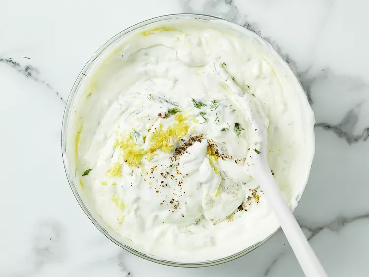

Greek Tzatziki Sauce
Description
Tzatziki is a refreshing Greek yogurt-based sauce with cucumber and garlic, perfect as a dip or condiment.

Ingredients
- 1 cup Greek yogurt
- 1/2 cucumber, grated and excess water squeezed out
- 2 cloves garlic, minced
- 1 tablespoon olive oil
- 1 tablespoon white vinegar or lemon juice
- Salt and pepper to taste
Instructions
- In a bowl, combine the Greek yogurt, grated cucumber, minced garlic, olive oil, and vinegar or lemon juice.
- Mix well until all ingredients are thoroughly combined.
- Season with salt and pepper to taste.
- For best flavor, let the tzatziki sit in the refrigerator for at least 30 minutes before serving.
- Serve chilled as a dip with pita bread, fresh vegetables, or as a condiment for grilled meats.